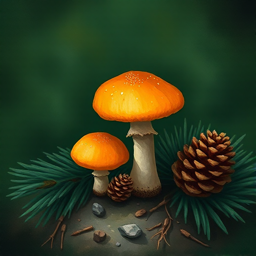

Identifica setas con una foto y guarda tus spots en un mapa de monte
Especie probable, confianza y parecidos peligrosos. Mapa de montaña con altitud, pendiente y umbría, y brújula hasta tu spot.
Actualizado el
iPhone, iPad y Mac con chip de Apple, en el App Store
Qué es Níscalo
Níscalo es una app para iPhone, iPad y Mac con chip de Apple que identifica setas a partir de una foto con inteligencia artificial y guarda tus sitios en un mapa de montaña. No sustituye a un micólogo.
Importante: Níscalo no sustituye a un micólogo experto. La identificación con IA es orientativa y puede equivocarse. No comas nunca una seta solo porque lo diga una app: si tienes la más mínima duda, no la comas y consulta a un experto o a una sociedad micológica.
Lo que consigues
- Una foto, una especie probable: Haz la foto con la cámara o elígela de la galería y mira el nombre común y científico de la especie más probable, con su porcentaje de confianza. Si la confianza es baja, la app te dice que no te fíes.
- Sabe con qué se confunde: Cada resultado enseña los rasgos que se ven en la foto y las especies parecidas, también las peligrosas, y una comestibilidad orientativa (comestible, con precaución, no comestible, tóxica, mortal o desconocida) siempre con el aviso de seguridad a la vista.
- Un mapa para leer el monte: Tres capas: Satélite, con las fotos aéreas de Apple; Montaña, solo relieve, con sombreado, colores por altura y curvas de nivel con cotas; y Calles.
- Altitud, pendiente y umbría: En la capa Montaña, el punto bajo la cruz te da la altitud, la pendiente y si es umbría o solana, con datos de relieve SRTM de la NASA.
- Tus spots, solo tuyos: Guarda un sitio con el GPS o tocando el mapa. Es privado hasta que decidas compartirlo con tus amigos, en el muro o por mensaje con otra app. La pantalla «Ir» te lleva con mapa y brújula, con rumbo y distancia.
- Hallazgos y amigos, con tu permiso: Publica lo que encuentras con foto, descripción y ubicación y elige quién ve el sitio: solo tú, tus amigos o todos. Añade amigos con un código. Sin correo ni contraseña: solo un nombre.
Gratis y Pro
Gratis, con un banner y un vídeo corto a pantalla completa antes de cada análisis de foto. Níscalo Pro quita los dos: 1,99 € al mes o 14,99 € al año en España, con 7 días de prueba gratis si aún no lo has probado. Hasta 40 análisis de fotos al día por cuenta.
Plataformas
Funciona en iPhone, iPad y en los Mac con chip de Apple. Necesita conexión a internet. En el Mac no hay brújula: la pantalla «Ir» te da el rumbo y la distancia.
Tus datos
La cuenta es solo un nombre, sin correo ni contraseña. Tus spots son privados hasta que los compartas, y en cada hallazgo eliges quién ve el sitio. La foto con la que identificas no se guarda si no publicas el hallazgo. Lo cuenta todo la política de privacidad.
Qué no hace
- No te dice si puedes comer una seta: da una pista, no una autorización, y puede equivocarse.
- No sustituye a un micólogo experto ni a una sociedad micológica.
- No identifica sin conexión a internet.
- No publica tus spots: son privados hasta que los compartas con amigos o en el muro.
- No enseña dónde encontraste un hallazgo a nadie más que a quien tú elijas: solo tú, tus amigos o todos.
Preguntas frecuentes
¿Níscalo me dice si puedo comerme una seta?
No. Níscalo da una pista, no una autorización: propone la especie más probable con su confianza y una comestibilidad orientativa, y puede equivocarse. No sustituye a un micólogo experto. No comas nunca una seta solo porque lo diga una app; si tienes la más mínima duda, no la comas y consulta a un experto o a una sociedad micológica.
¿Cómo identifica Níscalo una seta?
Con una foto que haces con la cámara o eliges de la galería. La inteligencia artificial devuelve el nombre común y científico de la especie más probable, su porcentaje de confianza, los rasgos que se ven y las especies con las que se puede confundir, también las peligrosas. Conviene fotografiar el sombrero, las láminas y el pie. Hay un máximo de 40 análisis al día por cuenta y hace falta conexión a internet.
¿Qué mapa usa y qué enseña la capa Montaña?
El mapa es el de Apple, con tres capas: Satélite, Montaña y Calles. Montaña muestra solo relieve: sombreado, colores por altura y curvas de nivel con cotas. Al apuntar con la cruz, da la altitud, la pendiente y si el punto es umbría o solana, con datos de relieve SRTM de la NASA.
¿Mis spots son privados?
Sí. Un spot es solo tuyo hasta que decides compartirlo con tus amigos, publicarlo en el muro o mandarlo por mensaje con otra app. En los hallazgos eliges quién ve dónde los encontraste: solo tú, tus amigos o todos. La cuenta es solo un nombre, sin correo ni contraseña.
¿Es gratis y en qué aparatos funciona?
Se descarga gratis y funciona en iPhone, iPad y Mac con chip de Apple. La versión gratuita lleva un banner y un vídeo corto antes de cada análisis de foto. Níscalo Pro los quita: 1,99 € al mes o 14,99 € al año en España, con 7 días de prueba gratis si aún no lo has probado. En el Mac no hay brújula y, si no tiene cámara, se identifica con una foto de la galería.
¿Dudas o ideas? Escribe a gabrielmicovictoria@gmail.com o mira la ayuda y soporte.